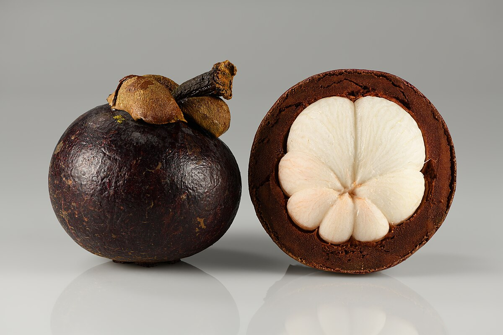
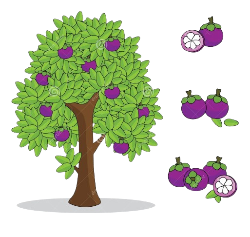

Manggis
💡 Fakta-fakta tentang Manggis!! 💡
Manggis digelar "Ratu Buah-Buahan" kerana rasanya manis masam yang seimbang dan berkhasiat.
Berasal dari Asia Tenggara (termasuk Malaysia, Indonesia & Thailand).
Berkulit ungu pekat bila masak, dengan isi putih lembut berulas (biasanya 5–7 ulas).
Terdapat banyak jenis durian terkenal seperti Musang King (D197), D24, Udang Merah, dan Black Thorn.
Pokok manggis agak lambat berbuah; biasanya hanya mula menghasilkan buah selepas 6–10 tahun ditanam.
🌱 Cara menanam pokok Manggis 🌱

Langkah-Langkah:
- pilih anak pokok sihat atau biji segar.
- gali 60cm, campur tanah + baja organik
- kalau tanam banyak, jarakkan 8–10 meter.
- siram selalu, buang rumput, letak baja sekali-sekala.
- pokok ambil masa lama (6–10 tahun) baru berbuah.